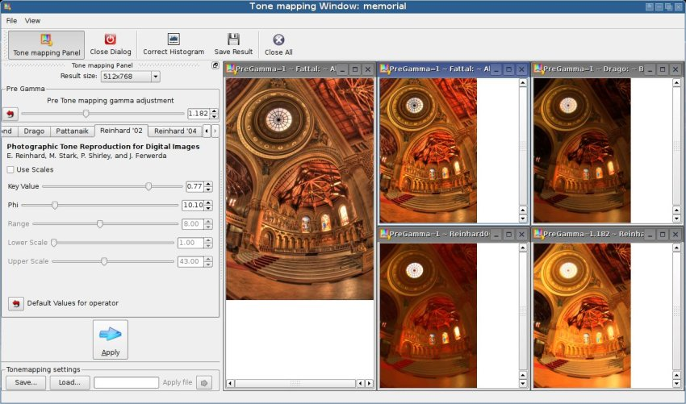
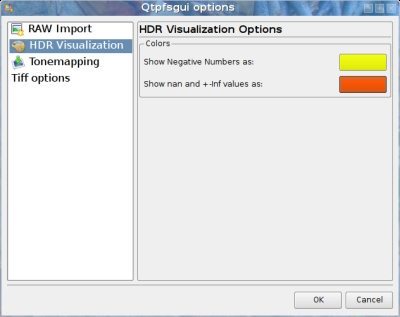
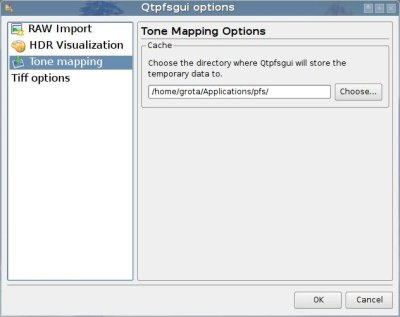
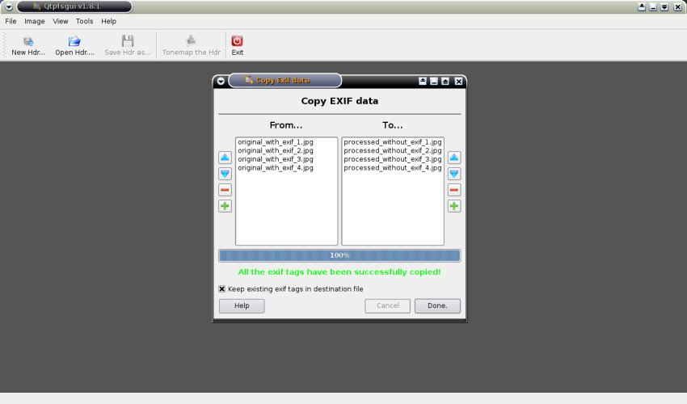

LuminanceHDR Manual
- Introduction
- Terminology
- Summary of features
- Using LuminanceHDR
- The main window
- The menubar
- The toolbar
- The workspace
- Visualization of an HDR
- Operations on an HDR
- The Creation of an HDR
- Projective transformations
- The Resize tool
- Interactive Tone mapping
- The tone mapping operators and their parameters
- The tone mapping settings file
- Batch Tone Mapping
- Preferences
- RAW Import
- HDR Visualization
- Tone mapping
- Tiff Options
- Copy Exif Data
- The menu reference
Introduction
LuminanceHDR is an open source graphical user interface application that provides a workflow for HDR imaging.
Terminology
- HDR
- Stands for "High Dynamic Range". An HDR image is an image which presents more than 8 bit per color channel. Most CRTs, LCDs and printers only have a limited dynamic range, and can display only LDR images (see below). Thus various methods of "converting" HDR images into a viewable format have been developed, generally called "tone mapping".
- LDR
- Stands for "Low Dynamic Range". The most common image formats, such as JPEG, PNG, GIF, ... have 8 bits per color channel, LDR is just another umbrella definition.
- Tone map
- Tone mapping is the method of converting an HDR into a LDR. Various algorithms exist for this purpose, and in this context they are also known as "tone mapping operators", or in this manual simply as "operator". Each operator is represented in the interactive tone mapping window as a "tab".
- TMO
- Shorthand for "Tone Mapping Operator".
- RAW
- Another umbrella definition for several (minimally processed) image formats. Raw files can have 12 or 14 bits per color channel, but noise usually cuts down the available dynamic range to something like 1000:1, roughly 10 bits. For all intents and purposes they are HDR files.
- Antighosting
- The HDR creation process involves merging a stack of images. An object changing position in the image set creates a strange effect in which the object is partially visible (like a ghost) in the final HDR. This problem can be corrected by automatic or manual procedures.
Summary of features
Current supported features include:
- Create an HDR from a set of files.
- Tone map an HDR image to get a LDR image.
- Save and load HDR images.
- Rotate and resize HDR images.
- Apply projective transformations to HDR images.
- Copy exif data between sets of images.
The first feature is accessible via the "File -> New Hdr..." wizard: in order to create an HDR the user can either load a set of JPEG files, a set of RAW files, or a set of TIFF files (8bit or 16bit).
Raw files are processed with dcraw in order to obtain a (8 or 16 bit) tiff file. For more information read this page.
The pictures must have been taken at the same scene, with different exposure settings (change the exposure time and/or aperture, and use a tripod if you have one). The newly created HDR will be available in the workspace as soon as the HDR creation wizard has ended.
The input files can be aligned via two alignment engines: align_image_stack and MTB.
The set of images can contain moving objects. This can result in an (unwanted) effect called ghosting. LuminanceHDR provides an interactive anti-ghosting tool that can help avoid such artifacts.
Read the chapter about the creation of an hdr for more information about the alignment engines and the interactive anti-ghosting tool.
To tone map an HDR file to get an LDR image (second feature) you can press the "Tonemap the HDR" button.
Via the "File -> Open Hdr..." wizard you can choose to load in the workspace an HDR image image file, and the "File->Save Hdr as..." item lets you save the currently selected hdr image to a HDR image file format (third feature).
Users can also rotate and resize (fourth feature) the currently selected hdr image via the "Image" menu item, see below.
It is also possible to apply panoramic (projective) transformation to a Hdr image via the "Image" menu item (fifth feature).
In order to create an HDR image LuminanceHDR requires to have a set of images with exif data in it. LuminanceHDR requires this information to get the exposure settings for an image in the set. When LuminanceHDR doesn't find this information in an image it warns the user and aborts the hdr creation process. To cope with this requirement LuminanceHDR provides a panel that performs a one-to-one copy of the exif data between two sets of files (sixth feature).
Using LuminanceHDR
This chapter describes the most important elements of LuminanceHDR: the Main window, the "New Hdr..." wizard procedure, the Resize tool, the interactive tone mapping window, the batch tone mapping , the copy exif data tool and the Preferences panel.
The main window
Here's the main window that you can see once the program has launched.

The menubar
At the very top you can see the menubar which, as its name implies, contains the various menus. When an item in a menu is "grayed out" it means that you cannot use (because it doesn't make sense) that particular function at that time. For example you cannot tone map an HDR unless you have at least one HDR image loaded in the workspace.
In case the text describing an item in a menu is not clear enough, below you can find a complete reference of all the items contained in all the menus.
The toolbar
Below the menubar you can see the toolbar. It simply contains some of the most frequently used functions listed in the menus: "New HDR...", "Open HDR...", "Save HDR as...", "Tonemap the HDR" and "Exit". Again, if an item is "grayed out" it means that you cannot use (because it doesn't make sense) that particular function at that time.
The workspace
The main gray area is the workspace. Here you can see all the HDR images which you can work on. As soon as the program is launched the workspace is empty. To have an HDR in the workspace you can either load an existing one (File->Open Hdr...) or create a new one (File->New Hdr...).
Visualization of an HDR
All of the visualization options do not modify the current HDR, they are only a visualization tool.
In the picture above you can see what an HDR image looks like once it is loaded in the workspace.
From left to right, in an HDR image titlebar you can see:
- A gamma combobox, which changes the visualization brightness.
- The green histogram with its blue "histogram selection" (you can use the mouse to drag it and/or move its boundaries).
In the View menu you can find the visualization options, which fall in 2 categories:
- Zoom options: (These are: View->Fit to window, Normal size, Zoom in, Zoom out).
- Histogram options: (all under: View->HDR Histogram->...)
The zoom options are self explanatory, they deal with the fitting of the HDR in its containing window.
The histogram options require more explanation: we somehow have to visualize an HDR image on a CRT or LCD, even if they can only show a normal LDR with 8 bit per color channel. So a simple "luminosity compression" algorithm is performed.
The problem is that when an HDR has a "wide" histogram, (a high gamut of dynamic range) its not possible, even with this (simple) "luminosity compression" algorithm, to show correctly at the same time all the regions of different luminosity in the image (this indeed would be the tone mapping's job).
So you may ask: "Why do we need this tool?"
The answer is that, for example, you may want to visualize correctly all the regions of luminosity of your HDR image by:
- narrowing down the range of the visible histogram (View->HDR Histogram->Low Dynamic Range)
- dragging repeatedly the blue rectangle over the different areas of the green histogram.
Operations on an HDR
As soon as at least one HDR image has been loaded in the workspace you can:
- Rotate it (Image->Rotate CounterClockWise or Image->Rotate ClockWise): Rotating an HDR modifies the HDR itself.
- Resize it, i.e. scale it (Image -> Resize the Hdr...): Resizing an HDR modifies the HDR itself.
- Save it (File->Save Hdr as...): This is useful when you have just created an HDR from a set of JPEGs (or RAWs or TIFFs) via the "File->New Hdr..." wizard.
- Apply projective transformations (Image->Projective Transformation...): This operation modifies the current HDR.
- Tone map it (Image->Tonemap the Hdr...): Tone mapping an HDR involves showing another window, called "Interactive Tone Mapping window" which uses the HDR as a source to create an LDR.
The Creation of an HDR
You can access the wizard that will guide you through the process of creating a new HDR image via the "File -> New Hdr..." menu item.
On the first page the wizard will ask you to select the set of images (of the same scene, but taken at different exposures) that are going to contribute to the final hdr (supported input: jpeg, raw and tiff -8 and 16 bit-).
Even if LuminanceHDR doesn't find the required exif data (Shutter Speed & Aperture) in your image set you can still proceed creating an HDR. To do so you have to insert manually the EV (exposure values) or stop difference values for the images in your the set.
The first page of the wizard enables the user to apply an automatic alignment step to the images in the set. It is possible to use one of two alignment options (or "engines"): align_image_stack and MTB.
The first option is usually a good choice (MTB works only on LDR images and has a simpler model that does not take into account rotation).
If your image set consists of LDR images (JPEG, 8 bit TIFF, or RAW files converted to tiff without the -4 switch) the second step of the wizard will show you a window that can be used to perform some "pre merging" editing activities.
The first feature will enable the user to add to each image in the set additional horizontal/vertical offsets.
The user is able to shift each image in set by one pixel by first selecting an image in the left (editable) list and then clicking one of the arrow buttons in the bottom-left panel. The same effect can also be obtained by using one of the WSAD or IKJL key combinations. Pressing Shift will shift by ten pixels, pressing control will shift by 50 pixels and pressing both Shift and Control will shift by 100 pixels.
By dragging a rectangle with the mouse, the user can also select a crop area for all the images in the set. Clicking the "Crop All Images" button will effectively crop the images in the set.
This window contains also the interactive anti-ghosting feature.
The user switches to anti-ghosting mode by pressing the "Anti Ghosting" button. It is then possible to draw a mask over the regions of the images that contain moving objects.
The user can select the size of the brush, its strength and whether the brush is adding or removing the mask.
The same window contains a button that enables the user to save the set of images after all the cropping has taken place and with all the anti-ghosting masks and shifts applied. The images will be saved in TIFF format, and the mask is saved as a 0-valued alpha channel in the image set.
The following page of the wizard will also ask you which kind of configuration you want to use to create the hdr from the source images: usually the first choice leads to good results, so feel free to accept the default "Config 1" option by pressing next.
If you think that the results can be improved you can try one of the other predefined configurations.
If you want to fiddle with settings you can check the "custom" option and another page of the wizard will show up with a complete set of configurations. It is worth mentioning that you should use the custom option as a last resort because the predefined configurations (which are a sub-set of the all possible configurations you can have in the custom configuration panel) are known to yield good results.
Projective Transformations
You can access this feature via the "Image -> Projective Transformation..." menu item.
With this tool the user is able to apply projective transformations to a Hdr image. This is useful if you shoot mirrorball Hdrs and you want to unwrap them, for example.
The Angular projection accepts an Angle parameter which defines how many degrees from the viewing direction the projection should cover.

The Resize tool
You can access this feature via the "Image -> Resize the Hdr..." menu item.

Interactive Tone Mapping
With this tool the user is able to get an LDR from an HDR.

The most important item in the Tone mapping window is the "Tone mapping Panel" (shown on the left). You can toggle its visibility via the first button in the toolbar. The "Tone mapping Panel" is actually a dockbar, so you can make it float or dock it in the left or right areas of the window.
At the top you can change (via a combobox) the size of the resulting image. It is usually a good idea to work on a smaller scale image while trying out the TMOs, because some of them can be very cpu-intensive.
Operators may behave differently depending on the chosen size.
The tone mapping step first applies to the HDR the gamma value specified by the pregamma value, then the tone mapping operator is applied.
- Pregamma changes the gamma in the HDR before the tone mapping: depending on the chosen tone mapping operator this can yield unexpected effects, like color saturation.
- The tone mapping operator transforms an HDR into a LDR.
NOTE: the post-gamma operation (typical of previous versions of LuminanceHDR) can be performed via the "Correct Histogram" button.
With the "Correct Histogram" button you can tweak the histogram of the current LDR image, the tool has been designed to be similar to the one in GIMP: you can drag the triangular handles to set the new value.
The tone mapping operators and their parameters
This section aims to be a reference for all the tone mapping operators and related options.
Have a look at http://osp.wikidot.com/parameters-for-photographers in the meanwhile.
The tone mapping settings file
Via the "Save..." button it is also possible to save in a text file (the filename extension is "txt"):
- the currently selected tone mapping operator and its related settings.
- the values of the pregamma settings.
NOTE: LuminanceHDR 1.8.4 uses a new file format (the postgamma option has been removed).
This is useful if you find that are often using some specific operator (and pregamma and postgamma settings) and don't want to manually set the values each time.
The "Load..." button lets you specify the file tone mapping settings filename that you want to load.
The "Apply settings" button applies the settings contained in the tone mapping settings file that has been loaded. This is useful when, after playing around with the values, you want to get back to the file's values.
Batch Tone Mapping
This window lets you tone map a batch of M hdr files using N tone mapping setting files. After the process you'll get M*N LDR results.
The top-left list contains the input hdrs, the top-right list contains the input tone mapping setting files.
You have to specify an output directory where the output LDR files will be saved to.
You can also always see what's happening in the Log panel at the bottom. You can filter the visualization of the log messages using the drop-down menu on the bottom-left and the text-field at the bottom-right of the window.

Preferences
This window lets you configure the global behavior of LuminanceHDR. You can access this tool via the "Tools -> Preferences..." menu item.
RAW Import
LuminanceHDR uses dcraw to convert RAW files. For more information please refer to the specific page.
HDR Visualization
Click on the buttons to pop-up a window that lets you choose which color to use for the nan/inf and for the negative values.

Tone mapping
LuminanceHDR needs a directory path where it will save some intermediate temporary files. Here you can specify this path.
You can also specify how many threads you want to use for the Batch Tone Mapping feature (and the file format you want to save the images to). Each thread gets allocated to a different CPU.

Tiff Options
Here you can choose which TIFF-HDR format LuminanceHDR will use to save an HDR image.

LogLuv TIFF is the appropriate format for most cases because it stores the hdr data in a reasonable amount of space (i.e. file size). Even if it is a 16 bit format, it can store floating point data.
The Float TIFF format has to be used only if you want to load your tiff in another application that cannot open the LogLuv format.
Copy Exif Data
You can access this window via the "Tools -> Copy Exif Data..." menu item.

With this window you will be able to copy the exif data contained in a set of files (the sources) into another set of files (the destinations).
This is a one-to-one data copy, i.e. the first file in the destination list gets the exif data from the first file in the sources list and so on.
This is useful if you lost your original exif data after processing your images.
The Menu reference
In this section you can find a complete reference describing what all the items in the menu do.
- File -> New Hdr...
- launches a wizard that enables you to create an HDR starting from either a set of JPEGs or a set of RAWs, or a set of 8 or 16 bit TIFF files.
- File -> Open Hdr...
- launches a window that lets you load in the workspace either an existing HDR image file format (OpenEXR, Radiance RGBE, PFS stream) or a RAW file or also a TIFF file.
- File -> Save Hdr as...
- launches a window that lets you save the HDR image currently selected in the workspace to a HDR image file format (OpenEXR, Radiance RGBE, PFS stream, or 32bit or LogLuv TIFF).
- File -> Exit
- Exits the program
- Image -> Rotate CounterClockWise
- modifies the HDR image currently selected in the workspace by rotating it counterclockwise.
- Image -> Rotate ClockWise
- modifies the HDR image currently selected in the workspace by rotating it clockwise.
- Image -> Projective Transformation...
- launches a window that lets you apply a projective (aka panoramic) transformation to the HDR image currently selected in the workspace.
- Image -> Resize the Hdr...
- launches a window that lets you resize the HDR image currently selected in the workspace.
- Image -> Tonemap the Hdr...
- launches a window that lets you tone map the HDR image currently selected in the workspace.
- View -> HDR Histogram -> Fit to dynamic range
- sets the boundaries of the blue "histogram selection" rectangle to the leftmost and rightmost values of the histogram.
- View -> HDR Histogram -> Low dynamic range
- sets the boundaries of the blue "histogram selection" rectangle to values which enable a correct representation of the image on a LCD/CRT. The "histogram selection" rectangle can later be dragged.
- View -> HDR Histogram -> Shrink dynamic range
- sets the boundaries of the blue "histogram selection" rectangle closer to each other.
- View -> HDR Histogram -> Extend dynamic range
- sets the boundaries of the blue "histogram selection" rectangle away to each other.
- View -> HDR Histogram -> Decrease Expos
- moves the boundaries of the blue "histogram selection" rectangle left
- View -> HDR Histogram -> Increase Exposure
- moves the boundaries of the blue "histogram selection" rectangle right.
- Tools -> Preferences...
- launches a window that lets you configure the global behaviour of LuminanceHDR.
- Tools -> Copy Exif Data...
- launches a window that lets you copy (a one-to-one copy) the exif tags in a set of images into another set.
- Help -> Documentation...
- Launches the help window containing this documentation.